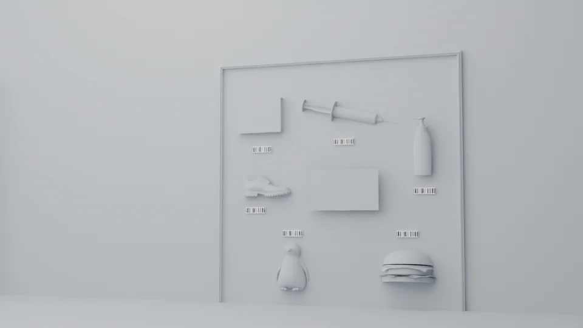

Neutral technical materials
A framed panel holds an arrangement of vertical pipes, bends and open pipe ends in several sizes.
Physical structure before surface artwork.
Explore the storyOrganize wall-scale activity elements through position, proportion and reach.
Two neutral technical views preserve the original scene geometry and saved cameras. The presentation concentrates on the relationship between the wall and its physical props.
A framed panel holds an arrangement of vertical pipes, bends and open pipe ends in several sizes.
A second saved wall view arranges everyday-object props and small label panels on a framed vertical surface.
Two wall-scale arrangements use physical forms to structure an activity surface.
Explore the complete compositions and interface states. Select any image for a closer look.
02 / PROJECT IMAGES
Select a view to explore.
A neutral technical scene view of a framed wall containing pipes of different lengths, diameters and orientations.

A neutral technical activity wall with everyday-item props and six recovered barcode labels.

Structure, interaction and visual decisions that give the work its character.
RoleUser-confirmed work. Original modeling and authorship of every source asset are not inferred from that confirmation.
AssetsThe owner confirms this project as their work. Supplied props and model components retain separate authorship. Saved cameras and geometry are preserved. The pipe-wall view remains neutral; the object-wall view restores six existing barcode bindings from a high-confidence relocated texture match, whose historical byte identity cannot be proven. Other surface artwork remains omitted. No working scan interaction, final delivery or public-use clearance is claimed.
StatusUser-confirmed project work; native technical preview. Final textured appearance, delivery and public-use status remain unverified.